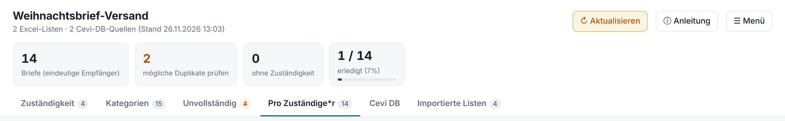
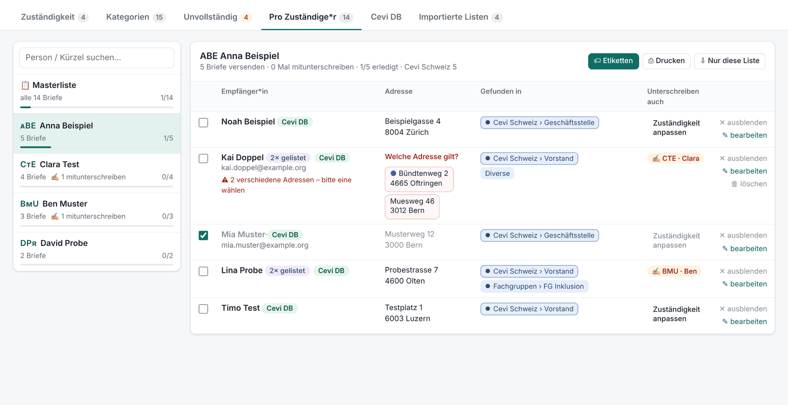
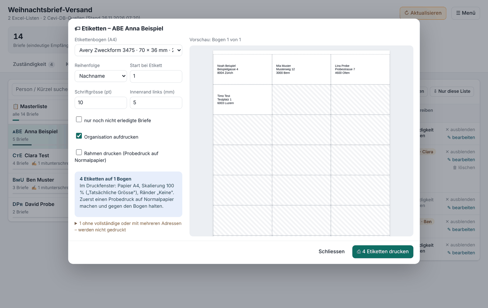
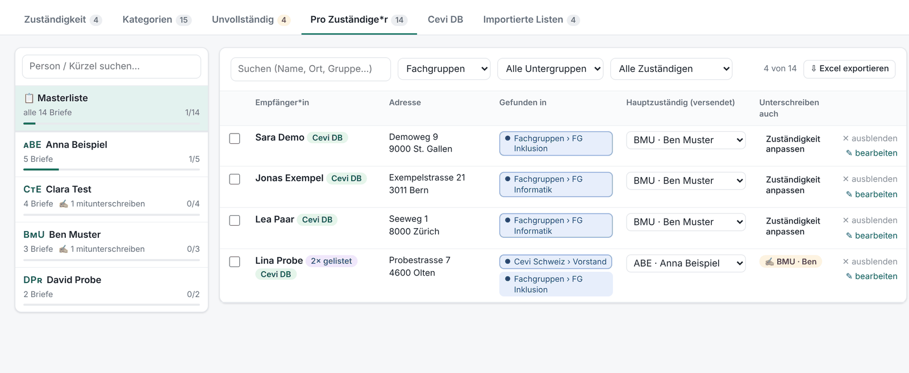
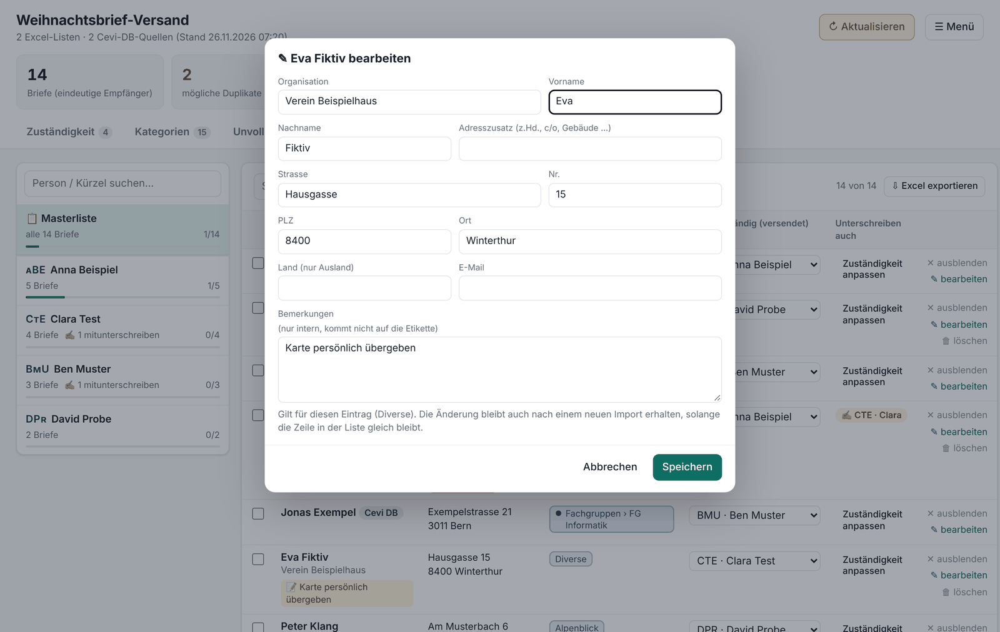
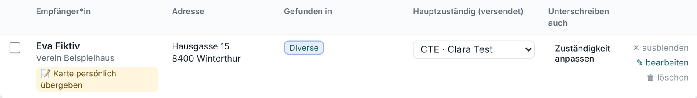
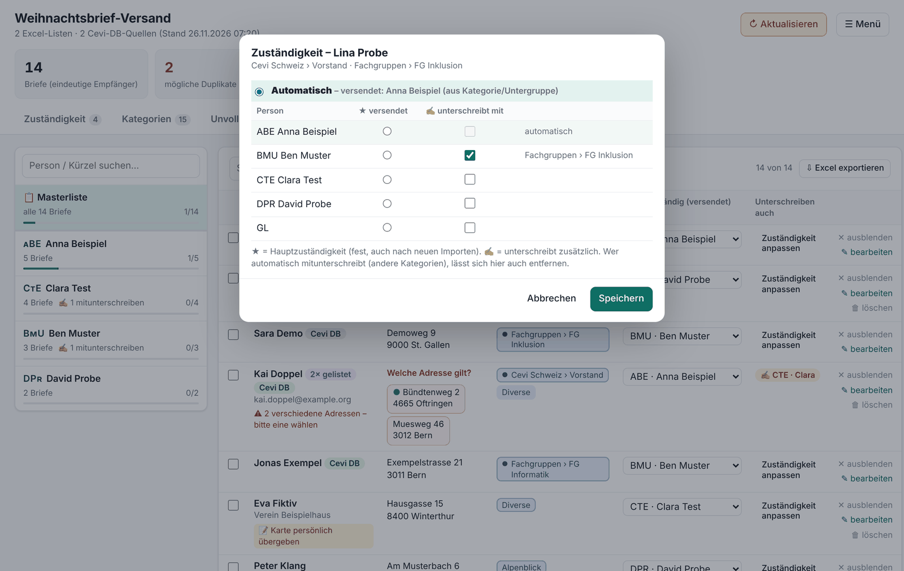
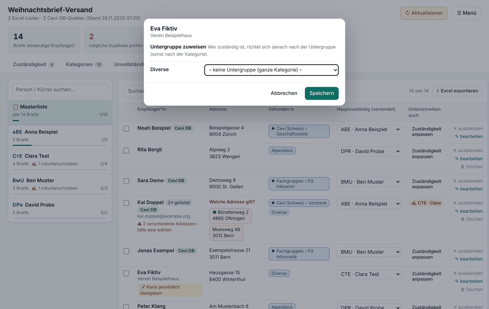
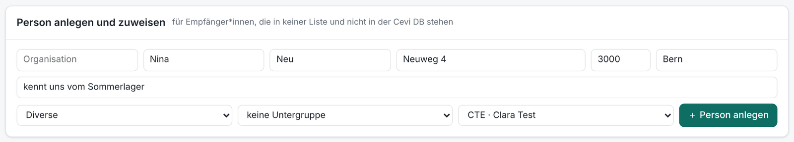
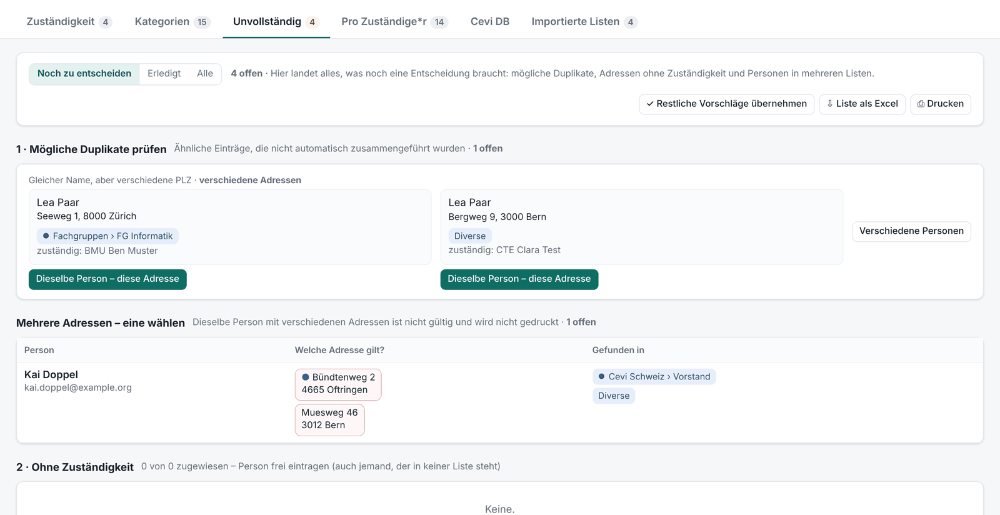

Worum geht es
Mit dem Tool verschickt Cevi Schweiz die Weihnachtskarten: Es sammelt alle Empfänger*innen aus der Cevi DB und aus Excel-Listen, legt für jede Person fest, wer die Karte schreibt, und druckt die Adressetiketten.
Das machst du als Nutzer*in:
- deine Briefe ansehen und die Etiketten drucken
- geschriebene Karten abhaken
- bei Bedarf eine Adresse korrigieren, eine Bemerkung notieren oder eine fehlende Person ergänzen
Das machst du nicht: Einstellungen in den Reitern Cevi DB, Importierte Listen, Kategorien und Zuständigkeit. Diese betreuen die Verantwortlichen.
Gut zu wissen:
- Jede Person bekommt nur eine Karte, auch wenn sie in mehreren Listen steht. Die anderen Zuständigen unterschreiben mit.
- Alles, was du im Tool änderst, wird automatisch für alle gespeichert. Es gibt keinen Speichern-Knopf.
- Alle Personen und Adressen in den Bildern dieser Anleitung sind erfunden.
Tool öffnen und anmelden
Du öffnest das Tool im Browser und meldest dich einmal mit deinem Cevi-Konto an. Danach lädt es alles selbst.
- Öffne den Link zum Tool am Computer (Chrome, Edge, Firefox oder Safari): Weihnachtsbrief-Versand. Lege dir ein Lesezeichen an. Ändert sich der Link, melden das die Verantwortlichen.
- Klicke oben rechts auf den orangen Knopf „↻ Aktualisieren“ und melde dich mit deinem Cevi-Konto (Microsoft) an.
- Das Tool lädt den gemeinsamen Stand aller und die Daten aus der Cevi DB. Das dauert ein paar Sekunden.
Ab dann aktualisiert sich das Tool bei jedem Öffnen automatisch. „↻ Aktualisieren“ brauchst du nur, wenn du sofort den neusten Stand willst.
Wurde das Tool verbessert, lade die Seite einmal ganz neu: Cmd + Shift + R (Mac) bzw. Ctrl + F5 (Windows).
Bild 1: Oben links der Titel, oben rechts „↻ Aktualisieren“, „ⓘ Anleitung“ und das Menü, darunter die vier Kacheln und die Reiter.

Überblick: Kacheln und Reiter
Für deine Arbeit brauchst du vor allem den Reiter Pro Zuständige*r. Die vier Kacheln oben zeigen den Stand und führen per Klick direkt zu den betroffenen Personen.
| Kachel | Ein Klick führt zu … |
|---|---|
| Briefe (eindeutige Empfänger) | der Masterliste mit allen Briefen |
| mögliche Duplikate prüfen | den offenen Fragen im Reiter Unvollständig |
| ohne Zuständigkeit | den Briefen, für die noch niemand zuständig ist |
| erledigt | allen Briefen, die noch nicht abgehakt sind |
| Reiter | Wofür | Für wen |
|---|---|---|
| Pro Zuständige*r | deine Briefe, Etiketten, Masterliste | alle |
| Unvollständig | offene Fragen: Duplikate, mehrere Adressen, fehlende Zuständigkeit | alle, die sich mit den Personen auskennen |
| Kategorien | ganz oben „Person anlegen“; darunter wer für welche Kategorie zuständig ist | Person anlegen: alle; Rest: Verantwortliche |
| Zuständigkeit | Liste der zuständigen Personen mit Kürzel | Verantwortliche |
| Cevi DB | welche Gruppen aus der Cevi DB geladen werden | Verantwortliche |
| Importierte Listen | eingelesene Excel-Listen | Verantwortliche |
Meine Briefe finden
Im Reiter Pro Zuständige*r klickst du links auf deinen Namen und siehst alle Karten, die du verschickst.
- Reiter Pro Zuständige*r öffnen.
- Links deinen Namen anklicken (oder oben im Suchfeld dein Kürzel eintippen). Bei jedem Namen steht, wie viele Briefe es sind und wie viele schon erledigt.
- Rechts erscheint deine Liste: Empfänger*in, Adresse, in welcher Kategorie die Person vorkommt und wer zusätzlich unterschreibt.
So liest du eine Zeile:
- Cevi DB (grün): Name und Adresse kommen aus der Cevi DB.
- 2× gelistet (violett): Die Person steht in zwei Listen und bekommt trotzdem nur eine Karte.
- Gefunden in (blau): Kategorie und Untergruppe, z.B. „Cevi Schweiz › Vorstand“. Der Punkt ● bedeutet: aus der Cevi DB.
- Unterschreiben auch (gelb, „✍ CTE · Clara“): Diese Person unterschreibt deine Karte mit. Gib ihr die Karte weiter, bevor du sie verschickst.
- Rote Hinweise wie „Adresse unvollständig“ oder „Welche Adresse gilt?“: Diese Karte kann noch nicht gedruckt werden (siehe „Offene Punkte“).
Hellgrau hinterlegte Zeilen sind ausgeblendet: Diese Personen bekommen dieses Jahr keine Karte, bleiben aber sichtbar, damit sie nicht vergessen gehen. Mit „↺ einblenden“ holst du sie zurück.
Unter deiner Liste steht ein zweiter Abschnitt „Hier unterschreibt … zusätzlich mit“: Diese Karten verschicken andere, du unterschreibst nur.
Bild 2: Die Liste von Anna Beispiel mit Hinweisen, Kategorien und Mitunterschreibenden.

Etiketten drucken
Mit dem grünen Knopf „Etiketten“ über deiner Liste druckst du alle deine Adressen auf einen A4-Etikettenbogen.
- In deiner Liste oben rechts auf „Etiketten“ klicken.
- Den Etikettenbogen wählen, den du hast (z.B. Avery Zweckform 3475, 70 × 36 mm). Rechts siehst du die Vorschau.
- Bei Bedarf einstellen:
- Start bei Etikett: bei einem angebrauchten Bogen die Nummer des ersten freien Etiketts.
- nur noch nicht erledigte Briefe: druckt nur, was noch nicht abgehakt ist.
- Reihenfolge: nach Nachname oder nach PLZ.
- Zuerst einen Probedruck auf Normalpapier machen (Häkchen „Rahmen drucken“) und gegen den Bogen halten.
- Auf „Etiketten drucken“ klicken. Im Druckfenster: Papier A4, Skalierung 100 % („Tatsächliche Grösse“), Ränder „Keine“.
Auslandsadressen bekommen das Land automatisch als letzte Zeile (z.B. DEUTSCHLAND). Adressen, die unvollständig sind oder bei denen noch nicht klar ist, welche Adresse gilt, werden nicht gedruckt. Das Fenster zeigt unten, welche das sind.
Daneben: „Drucken“ druckt deine Liste als Übersicht, „Nur diese Liste“ lädt sie als Excel-Datei herunter (z.B. für einen Serienbrief).
Bild 3: Etiketten für Anna Beispiel mit Einstellungen links und Vorschau rechts.

Briefe abhaken
Ist eine Karte geschrieben und verschickt, setzt du vorne in der Zeile das Häkchen. Die Zeile wird grau und durchgestrichen.
- Der Fortschritt steht links bei deinem Namen (z.B. „1/5“) und oben in der Kachel erledigt.
- Das Häkchen sehen alle. So weiss das Team, was noch offen ist.
- Versehentlich abgehakt? Einfach nochmals klicken.
Masterliste: suchen und filtern
Die 📋 Masterliste (Reiter Pro Zuständige*r, ganz oben links) zeigt alle Empfänger*innen. Hier findest du jede Person, auch wenn jemand anderes sie verschickt.
- Suchen: Name, Ort, Gruppe oder ein Wort aus einer Bemerkung eintippen.
- Alle Kategorien: nur eine Kategorie anzeigen, z.B. Fachgruppen.
- Alle Untergruppen: erscheint, sobald die gewählte Kategorie Untergruppen hat, z.B. „FG Inklusion“.
- Alle Zuständigen: nur die Briefe einer Person, oder „⚠ ohne Zuständigkeit“. Das Häkchen „nur ausgeblendete“ zeigt nur die ausgeblendeten Personen.
- Hauptzuständig (versendet): Hier lässt sich direkt wählen, wer die Karte verschickt.
- ⇩ Excel exportieren: lädt die ganze Liste herunter, mit einem Blatt pro zuständiger Person.
Bild 4: Masterliste, gefiltert auf die Kategorie Fachgruppen.

Eine Person anpassen
Hinten in jeder Zeile stehen die Aktionen. Mit „✎ bearbeiten“ korrigierst du Name oder Adresse und hältst eine Bemerkung fest.
- In der Zeile der Person auf „✎ bearbeiten“ klicken.
- Felder ändern: Organisation, Vorname, Nachname, Adresszusatz (z.Hd., c/o, Gebäude), Strasse, Nr., PLZ, Ort, Land (nur Ausland), E-Mail.
- Unter Bemerkungen kannst du eine interne Notiz schreiben, z.B. „Karte persönlich übergeben“. Sie kommt nicht auf die Etikette.
- Speichern (oder Enter).
Gut zu wissen:
- Die Person ist danach mit „angepasst“ markiert. Die Bemerkung steht gelb unter dem Namen („📝 …“).
- Bei Personen aus der Cevi DB sind Name und Adresse gesperrt. Sie werden in der Cevi DB korrigiert. Die Bemerkung kannst du trotzdem schreiben.
- „↺ Original aus der Liste“ im selben Fenster holt die ursprünglichen Angaben zurück.
Bild 5: Fenster „bearbeiten“ für eine Person aus einer Excel-Liste, mit Bemerkung.

Bild 6: Die Aktionen hinten in der Zeile: ausblenden, bearbeiten, löschen.

Zuständigkeit anpassen
Wer eine Karte verschickt und wer mitunterschreibt, legst du in der Spalte „Unterschreiben auch“ fest.
- Steht dort niemand, auf „Zuständigkeit anpassen“ klicken. Steht dort schon jemand („✍ …“), auf den Namen klicken.
- Im Fenster:
- Automatisch: Es versendet, wer bei der Kategorie oder Untergruppe eingetragen ist. Das ist der Normalfall.
- ★ versendet: eine Person fest wählen. Das gilt auch nach neuen Importen.
- ✍ unterschreibt mit: weitere Personen anhaken oder jemanden abwählen.
- Speichern.
Wechselst du die versendende Person, schlägt das Tool die bisherige automatisch als Mitunterschreibende vor. Die Listen aller Beteiligten passen sich sofort an.
Bild 7: Fenster „Zuständigkeit“ für eine Person, die in zwei Kategorien vorkommt.

Untergruppe zuweisen, ausblenden, löschen
Untergruppe zuweisen: Klicke auf den Namen der Person (oder auf ihre Kategorie unter „Gefunden in“). Im Fenster wählst du pro Kategorie eine Untergruppe, „keine Untergruppe“ oder legst mit „＋ Neue Untergruppe …“ eine neue an. Danach ist zuständig, wer bei dieser Untergruppe eingetragen ist.
Bild 8: Fenster „Untergruppe zuweisen“.

Ausblenden („✕ ausblenden“): Die Person bekommt dieses Jahr keine Karte, keine Etikette und erscheint in keinem Export. Sie bleibt grau sichtbar (in der Masterliste mit dem Häkchen „nur ausgeblendete“ schnell zu finden) und lässt sich mit „↺ einblenden“ zurückholen. Das ist der richtige Weg, wenn jemand nur dieses Mal keine Karte erhält.
Löschen („🗑 löschen“): Gibt es nur in den Kategorien Diverse, Alpenblick, MIO und Internationale Partner sowie bei Personen, die von Hand erfasst wurden.
- Steht die Person noch in einer anderen Kategorie, bleibt sie dort. Das Tool sagt es dir vor dem Löschen.
- Gelöschte Personen kommen auch bei einem neuen Import nicht zurück.
- Vertan? Oben in der Masterliste steht „🗑 … gelöscht · wiederherstellen“.
Fehlende Person ergänzen
Fehlt jemand, der eine Karte bekommen soll, legst du die Person im Reiter Kategorien ganz oben unter „Person anlegen und zuweisen“ an. Suche vorher in der Masterliste, ob sie nicht doch schon da ist.
- Organisation nur ausfüllen, wenn die Karte an eine Organisation geht. Vor- und Nachname dürfen dann leer bleiben oder die Kontaktperson nennen.
- Vorname, Nachname, Strasse und Nr., PLZ, Ort eintragen.
- Bei Bedarf eine Bemerkung (nur intern).
- Kategorie wählen, allenfalls eine Untergruppe, und wer zuständig ist.
- Auf „＋ Person anlegen“ klicken (oder Enter).
Die gewählte Zuständigkeit gilt fest. Die Person erscheint sofort in der Liste der zuständigen Person und in der Masterliste (mit „✎“ bei der Kategorie). Falsch erfasst? In der Zeile „✎ bearbeiten“ oder „🗑 löschen“.
Bild 9: Formular „Person anlegen und zuweisen“ im Reiter Kategorien.

Offene Punkte klären (Reiter Unvollständig)
Im Reiter Unvollständig sammelt das Tool alles, was eine Entscheidung braucht. Die Zahl im Reiter zeigt, wie viel noch offen ist.
| Abschnitt | Was ist los? | Was du tust |
|---|---|---|
| Mögliche Duplikate prüfen | Zwei Einträge sehen nach derselben Person aus, z.B. gleicher Name mit anderer PLZ. | Gleiche Person: unter der richtigen Adresse „Dieselbe Person – diese Adresse“. Sonst „Verschiedene Personen“. |
| Mehrere Adressen – eine wählen | Eine Person hat zwei verschiedene Adressen. Sie wird nicht gedruckt, bis eine gewählt ist. | Auf die gültige Adresse klicken. |
| Ohne Zuständigkeit | Für diese Briefe ist niemand eingetragen. | Kürzel oder Name eintragen und „Zuweisen“. |
| Mehrfach gelistet | Die Person steht in mehreren Listen mit verschiedenen Zuständigen. | Wählen, wer versendet; die anderen unterschreiben mit. |
Bist du unsicher, ob zwei Einträge dieselbe Person sind, lass den Punkt offen und frag die Verantwortlichen.
Bild 10: Reiter Unvollständig mit einem möglichen Duplikat und einer Person mit zwei Adressen.

Häufige Fragen und Tipps
Mein Name fehlt links in der Liste. Dann bist du noch nicht als zuständige Person erfasst. Melde dich bei den Verantwortlichen.
Eine Adresse aus der Cevi DB ist falsch. Sie muss in der Cevi DB korrigiert werden. Nach dem nächsten Aktualisieren stimmt sie auch im Tool. Bis dahin kannst du eine Bemerkung festhalten.
Der Knopf „↻ Aktualisieren“ ist orange oder zeigt ⚠. Klicke darauf und melde dich bei Bedarf neu mit dem Cevi-Konto an.
Können mehrere gleichzeitig arbeiten? Ja. Das Tool gleicht alle paar Sekunden mit den anderen ab und führt die Änderungen zusammen.
Die Etiketten sind verschoben. Mach einen Probedruck mit Rahmen, prüfe im Druckfenster Skalierung 100 % und Ränder „Keine“, und passe bei Bedarf „Innenrand links“ an.
Am Handy? Das Tool ist für den Computer gedacht. Etiketten und Listen druckst du am besten von dort.
Datenschutz: Die Adressen sind nur für den Weihnachtsversand. Gib Excel-Exporte nicht weiter und lösche sie nach Gebrauch.